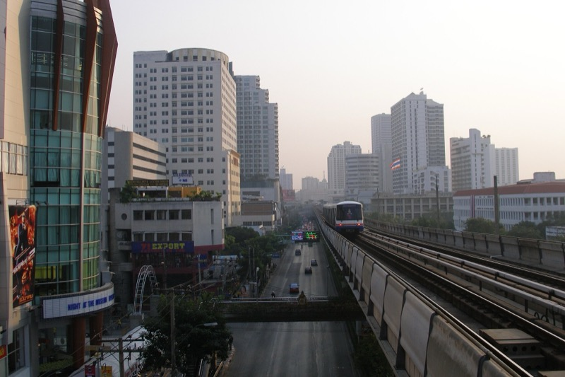

資訊
出發前要做的事
交通從飯店出發怎麼走、哪些要現在訂、服裝規定、換匯與緊急電話。

交通從 Eastin Grand Phayathai
Siam 商圈BTS 2 站4 分 / 17 銖
AriBTS 3 站6 分 / 23 銖
朱拉夜市 Banthat ThongBTS 3 站 + 走 7 分15 分 / 23 銖
Asok / Nana / Soi 11BTS（Siam 轉車）13-15 分 / 44 銖
Thonglor / EkkamaiBTS（Siam 轉車）17-19 分 / 47 銖
Sathorn / Chong Nonsi（Nobu）BTS（Siam 轉 Silom 線）15 分 / 44 銖
ICONSIAMBTS 到 Saphan Taksin 轉免費接駁船25 分
老城區 / 中國城 / Talat NoiGrab（無捷運直達）25-30 分 / 200-250 銖
Safari WorldGrab40-60 分 / 350-450 銖
Taling ChanGrab30-35 分 / 200-250 銖
RajadamnernGrab25 分 / 200-250 銖
蘇汪那蓬機場 BKK機場快線 / 同站直達26-30 分 / 45 銖
現在就要訂的按順序，越上面越急
Chom Arun 9/26 17:30 屋頂露台 2 位500 銖訂金 / 電話 +66 95 446 4199 或 FBChao Phraya Princess 9/25 夜船 upper deck官網訂、指定上層 / 02-860-3700Nobu Bangkok 9/27 19:30 主餐廳 2 位排定 / 已查有位（19:30 / 20:00 都有）/ SevenRooms 直接訂Safari World 9/25 全票線上 1,100-1,200 比現場 1,500 省Tichuca 9/25 訂位官網Mae Klong Hua Pla Mo Fai 9/26 12:20 午餐電話或 FB 訂位BKK Social Club / Dry Wave / Opium（選的那間）都要訂位泰國電子入境卡 TDAC抵達前 3 天內填，兩人都要，免費Rajadamnern 泰拳已訂 / 帶 QR服裝規定速查
寺廟大皇宮最嚴：長褲/過膝長裙、有袖包肩、不透不破不緊身。臥佛寺、水門寺：包肩過膝即可。帶一件薄長褲跟有袖上衣放包包裡。
Rooftop / 高級餐廳Nobu、Tichuca、Sky Bar、Octave、Above Eleven：男生包鞋（拖鞋涼鞋 Birkenstock 都不行）、有袖上衣、長褲或合身短褲；女生不能運動服泳裝。
錢
換匯現金換 15,000-20,000 銖。機場只換 3,000-5,000 應急，市區 Superrich（綠色招牌，Ratchadamri / Siam 都有）匯率最好。泰銖打九折 ≈ 台幣。
預估花費（兩人）Safari World 2,400 / 大皇宮 1,000 / 臥佛寺 600 / 長尾船 300 / Chom Arun 1,500（含訂金）/ 泰拳已付 / 夜船 2,400 或 Nobu 6,000+ / Tichuca 800 / Grab 一天 600-1,000 / 三餐加宵夜一天 1,500-2,500。
緊急點了直接撥
觀光警察（中英文）1155醫療救護1669報警191外交部旅外急難救助800-0885-0885九月天氣
雨季尾白天 32-34°C、濕度高，午後 15-17 點常有 1 小時雷陣雨。帶輕便雨衣（傘在風雨中沒用）、防曬、水壺。日落 18:20。
照片來源Wikimedia Commons
鄭王廟 WAT ARUN TEMPLE CHAO PRAYA RIVER BANGKOK, CC BY-SA 2.0 / 大皇宮, Basile Morin, CC BY-SA 4.0 / 臥佛寺 Wat Pho 2013, CC BY-SA 3.0 / 耀華力 Yaowarat at night, CC BY 2.0 / Talat Noi Rong Kuak Shrine, CC BY-SA 4.0 / 蘇興泰宅, Phoebus 28, CC BY-SA 4.0 / ICONSIAM Approaching Iconsiam from Chao Phraya River, CC BY-SA 4.0 / Taling Chan Floating Market, Globe-trotter, CC BY-SA 3.0 / Ari Rhythm Phahon-Ari, Robmbkk, CC BY-SA 4.0 / Ari Samphan Noodles Stall, Phoebus 28, CC0 / 芒果糯米飯, Arthur Taksin, CC BY 4.0 / BTS skyline at sunset, Vyacheslav Argenberg, CC BY 4.0 / Suvarnabhumi Terminal C, CC BY 4.0 / 老城區俯瞰 View from Wat Ratchanatdaram, Radosław Botev, CC BY 3.0 pl / 泰拳 Lumpinee Boxing Stadium, Mr.Peerapong Prasutr, CC BY-SA 4.0 / 曼谷夜景與街食照片同為 Commons CC 授權。